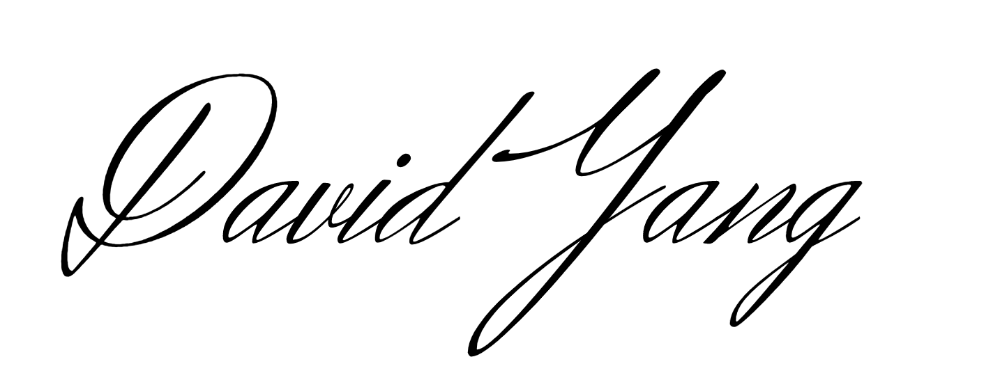

Discontinuing USACO Tutor
With heavy hearts, USACO Tutor has shut down and all services suspended as of June 2021.
9 months ago, we've been creating better ways for students to practice USACO effectively. Our mission was to allow students, at a price accessible to all, to achieve the unthinkable — testing the waters of what is possible in USACO. In many ways, we've achieved that: promoting students from Bronze to Silver, to Gold, and to Platinum, in 1 month.
While many factors motivated us to this decision, it ultimately comes down to the core economics of what it takes to achieve our mission.
The writing was on the walls — incredibly high churn of students after each competition, and tutors finding other lucrative opportunities. We've tried to find ways to maintain our tutoring model: raising prices, lowering prices, hiring the best tutors. After many months of persistence and trial/error, it is evident that this model is unable to scale.
To achieve these incredible results, the team behind the student must also be incredible. We've also realized that the world has a shortage of these incredible people. To our tutors: you are incredible. To students: we refuse to accept mediocrity. We're a company that prides itself on pushing the limits of student achievement.
We can only be small.
To our existing customers, we are deeply grateful for the opportunity to serve your student. We value the trust you had for taking a risk when joining us and our mission. Know that we made this decision with heavy regard for the impact on existing students, so we want to do as much as we can to help make the transition as smooth as possible.
We'll be connecting you to the tutor you worked with, so you can contact them directly.
Let's reimagine USACO Tutor, together.
Sincerely,

— David Yang + USACO Tutor Team